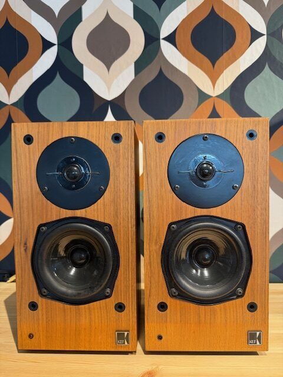
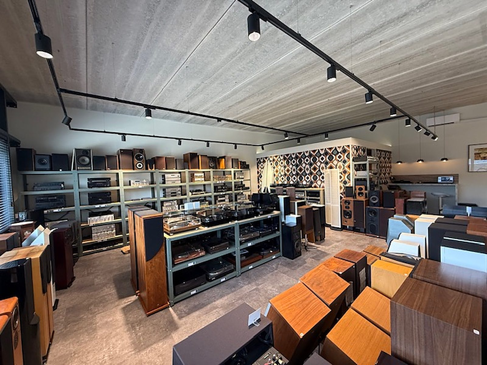
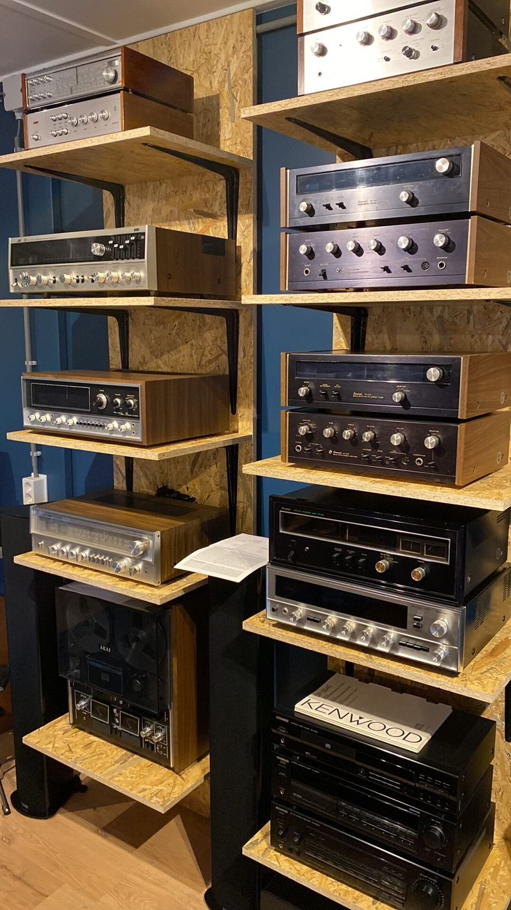
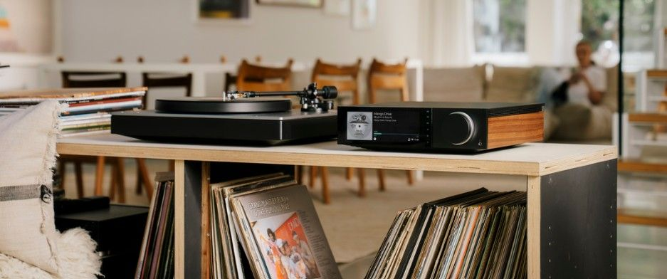
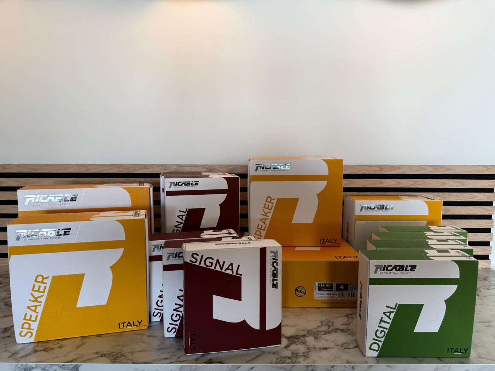
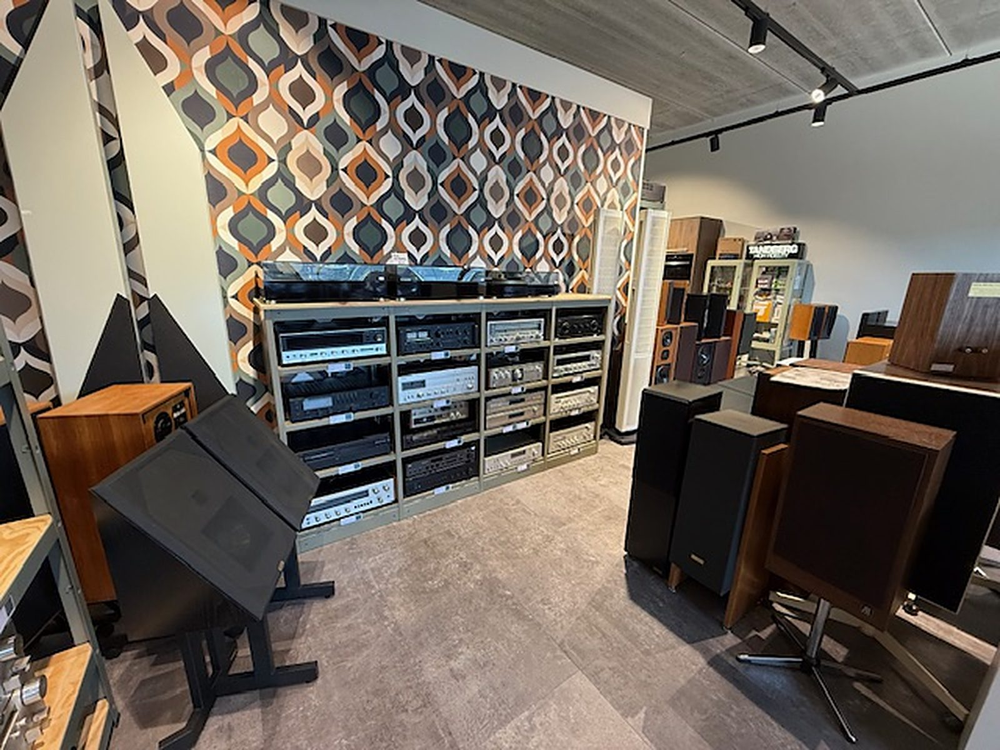
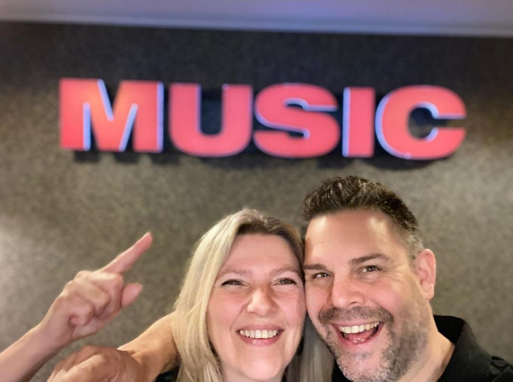

Vintage speakers
Altijd zo'n ruim 100 verschillende luidsprekersets, van KEF tot unieke vondsten.
Ruim 100 setsMeer info

Gereviseerd door onze eigen technische dienst en rustig te beluisteren in onze winkel in Oudenbosch. Kom langs of plan een luistersessie.
De apparatuur die men toen niet kon betalen, maar altijd wel heeft willen hebben. Nu weer binnen bereik, passend bij jouw budget.

Altijd zo'n ruim 100 verschillende luidsprekersets, van KEF tot unieke vondsten.

High-end apparatuur uit de jaren '70, '80 en '90, gereviseerd en klaar voor een nieuw leven.

Dealer van Cambridge Audio en Lentus Audio. Nieuwe streamers passen perfect bij vintage speakers.

Met de hand gemaakt in Italië, met levenslange garantie. Van de betaalbare Primus tot de Dedalus.

Elke muziekstijl heeft zijn eigen passende speaker. Daarom luister je bij ons eerst, in onze volledig ingerichte luisterruimte.

"Apparatuur die zo goed klinkt, zo mooi is, en zo degelijk gebouwd, verdient het om na 30, 40 of zelfs 50 jaar, nog een zelfde ronde mee te gaan."
Twintig jaar geleden begon Patrick zijn liefde voor hifi uit de jaren '70 en '80 door te geven. Na een mooie start in Breda, als Vintage Audio Breda, zitten Patrick en Tamara sinds januari 2025 in hun gloednieuwe winkel in Oudenbosch.
Onze technische dienst bestaat uit vakkundige mensen met jarenlange ervaring in de wereld van hifi. Alle kennis en kunde is in huis.
Wil je geraakt worden door mooie apparaten en fantastisch geluid, of ben je gewoon nieuwsgierig? Je bent van harte welkom.
Bel of app ons voor een luistersessie of een vraag over een apparaat.